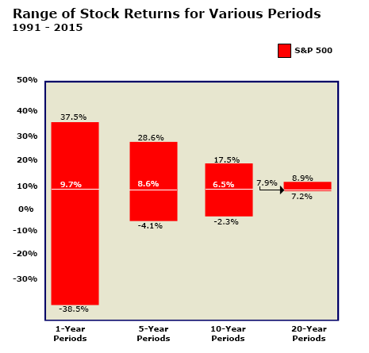

Time has considerable impact on market risk; this is one of the reasons why it is so important to take into consideration a client’s time horizon when considering alternative investments. Referring back to the bell curve on the previous page, over time, market risk (variation around the mean) is reduced.

This positive impact of time can be illustrated by breaking the past 25 years of stock returns into different time periods. As seen in the chart, if each year is taken as an independent time period, the range of returns from year to year is very wide (from -38.5% to +37.5%), with the potential for very significant losses in any given year. But when the past 25 years are broken into time periods of 5 years each, the range narrows considerably (from -4.1 to +28.6%). Break it into 10 and 20-year periods and the range narrows further, narrowing to about a half percent around the mean for 20-year periods (with no periods of negative return). This data confirms that for longer holding periods, the probability of negative returns decreases and the gap between the maximum and minimum total return is reduced.
Therefore, on balance, time has historically served as an ally to investors by reducing risk.